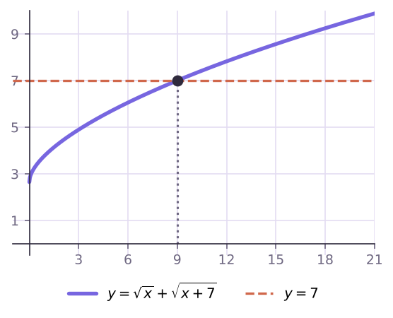

Теория
В § 14 мы решали уравнения «в лоб» — возведением в степень. Это работает не всегда: после возведения часто получается уравнение четвёртой степени. Сегодня — приёмы, которые сводят задачу к простой.
Приём 1. Замена переменной
Если в уравнении несколько раз встречается одно и то же выражение (или выражения, связанные простой формулой), его обозначают новой буквой. Главное правило: сразу записать ограничения на новую переменную. Для t = √… или t = 4√… это t ≥ 0; для t = 3√… ограничений нет.
Реши уравнение x² − 3x + √x² − 3x + 5 = 7.
Пусть t = √x² − 3x + 5, t ≥ 0. Тогда x² − 3x = t² − 5, и уравнение принимает вид t² + t − 12 = 0: t = 3 или t = −4. Условию t ≥ 0 отвечает t = 3.
√x² − 3x + 5 = 3, x² − 3x − 4 = 0, x = 4 или x = −1.
Реши уравнение √x − 34√x + 2 = 0.
√x = (4√x)². Пусть t = 4√x ≥ 0: t² − 3t + 2 = 0, t = 1 или t = 2. Отсюда x = 1 или x = 16.
Реши уравнение √x + 1x + 2√xx + 1 = 3.
Подкоренные выражения взаимно обратны. Пусть t = √x + 1x, t > 0; тогда второй корень равен 1t: t + 2t = 3, t² − 3t + 2 = 0, t = 1 или t = 2.
t = 1: x + 1x = 1 — корней нет. t = 2: x + 1x = 4, x = 1/3. Проверка: √4 + 2√14 = 2 + 1 = 3.
Забыть условие t ≥ 0 — значит получить лишние «корни». В примере 1 при t = −4 пришлось бы решать √… = −4, у которого решений нет.
Приём 2. Две новые переменные
Если в уравнении два разных корня, удобно обозначить их a и b и найти связь между ними, не содержащую x. Получается система двух уравнений с двумя неизвестными — обычно симметричная.
Реши уравнение 3√2 − x + √x − 1 = 1.
Пусть a = 3√2 − x, b = √x − 1 ≥ 0. Тогда a³ + b² = (2 − x) + (x − 1) = 1. Система: a + b = 1, a³ + b² = 1.
Подставим a = 1 − b: (1 − b)³ + b² = 1, то есть −b³ + 4b² − 3b = 0, b(b − 1)(b − 3) = 0. b = 0, 1, 3 — все ≥ 0, значит, x = b² + 1: x = 1, 2, 10.
Проверка: 3√1 + 0 = 1; 0 + 1 = 1; 3√−8 + 3 = 1. Все подходят.
Системы с корнями
Реши систему √x + √y = 5, x + y = 13.
Пусть a = √x ≥ 0, b = √y ≥ 0: a + b = 5, a² + b² = 13. Так как a² + b² = (a + b)² − 2ab, то ab = 6. Значит, a и b — корни уравнения z² − 5z + 6 = 0: {2; 3}. Ответ: (4; 9), (9; 4).
Приём 3. Монотонность
Если левая часть уравнения возрастает, а правая — постоянна (или убывает), корень не больше одного. Его угадывают и доказывают, что других нет.
Реши уравнение √x + √x + 7 = 7.
Функция y = √x + √x + 7 возрастает на [0; +∞) как сумма возрастающих, поэтому значение 7 она принимает не более одного раза. Подбором: x = 9, √9 + √16 = 3 + 4 = 7. Ответ: 9.

В монотонном способе обязательна фраза «функция возрастает, поэтому корень единственный». Угаданный корень без неё — не решение.
Приём 4. Умножение на сопряжённое выражение
Выражения √A − √B и √A + √B называют сопряжёнными. Их произведение не содержит корней: (√A − √B)(√A + √B) = A − B. Если в уравнении есть разность корней, а разность подкоренных выражений — число, удобно умножить (или разделить) на сопряжённое.
Реши уравнение √x² + 9 − √x² − 7 = 2.
1. Область определения: x² − 7 ≥ 0 (выражение x² + 9 положительно всегда).
2. Сопряжённое не равно нулю. На области определения √x² + 9 ≥ 3, поэтому S = √x² + 9 + √x² − 7 ≥ 3 > 0. Значит, умножение обеих частей на S — равносильное преобразование: корней не прибавится и не потеряется.
3. Умножаем. Слева (√x² + 9 − √x² − 7) · S = (x² + 9) − (x² − 7) = 16, справа 2S. Получаем 16 = 2S, то есть √x² + 9 + √x² − 7 = 8.
4. Складываем это равенство с исходным: 2√x² + 9 = 10, √x² + 9 = 5, x² = 16, x = ±4.
5. Проверка: √25 − √9 = 5 − 3 = 2 — оба корня подходят (и x² = 16 ≥ 7).
Умножать на сопряжённое безопасно, только если оно не обращается в ноль на области определения. Если множитель может быть равен нулю (как √1 + x − 1 при x = 0 в примере из учебника), получится уравнение-следствие: появится лишний корень, и проверка обязательна. А деление на выражение, которое может быть нулём, наоборот, может потерять корни.
Задачи урока
Реши в тетради. Ответы разберём на занятии.
Тест к уроку
Домашнее задание
Задачи Д1–Д6 ниже. В каждой замене сразу выписывать ограничение на новую переменную; в Д6 обязательно обосновать, что корень единственный.